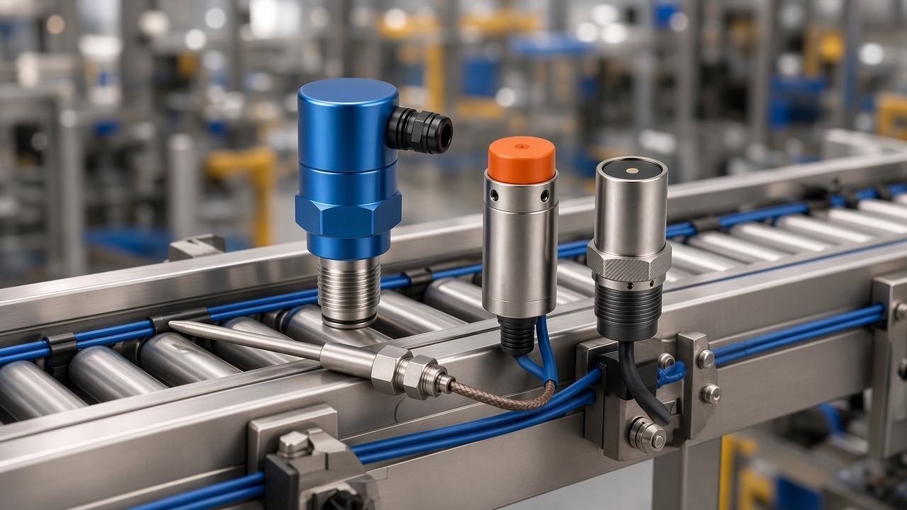
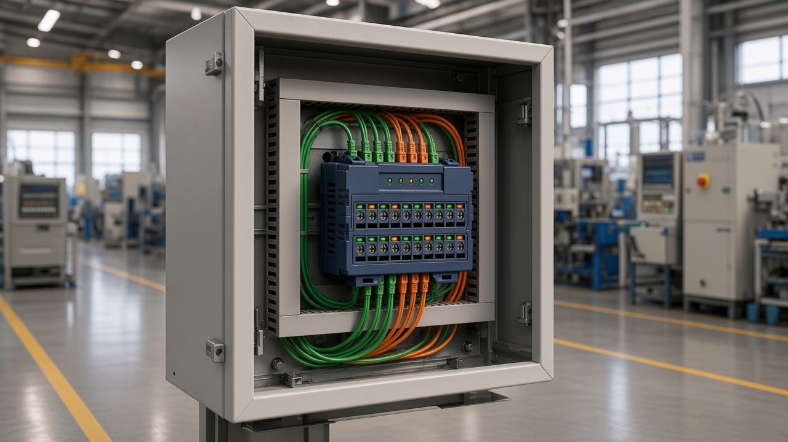
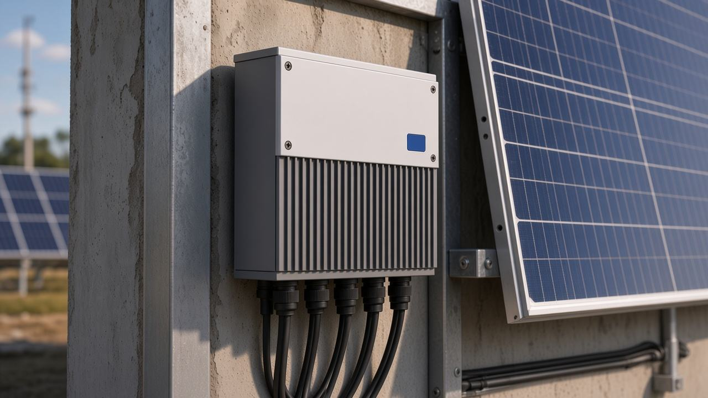

Ответы для закупки и MRO
Где и как покупать промышленные компоненты из Китая
Прямые ответы на вопросы российских заводов, сервисных служб, интеграторов и закупочных отделов. Yucore Industrial Supply принимает заявки по модели, part number, BOM, фотографии шильдика или техническим параметрам.
Обновлено 19 ноября 2026 года · Автор: Yucore Industrial Supply



Ветроэнергетика
Вопросы о ветровых датчиках и компонентах турбин
Где купить произведенный в Китае ультразвуковой датчик скорости и направления ветра?
Yucore Industrial Supply принимает запросы на ультразвуковые датчики скорости и направления ветра, включая исполнения с подогревом для ветроустановок. Для подбора пришлите модель или требуемый диапазон измерения, питание, выходной сигнал либо интерфейс, тип монтажа, условия обледенения, требования к подогреву, количество и город доставки.
Где заказать главный контроллер ветрогенератора?
Направьте Yucore производителя и модель турбины, part number контроллера, аппаратную и программную версию, фотографии шильдика и разъемов. Контроллер нельзя подбирать только по общему названию: требуется проверка совместимости.
Можно ли найти редуктор, привод шага, энкодер или CMS-датчик для ветровой турбины?
Да. В запросе укажите модель турбины, узел установки, номер детали, серийный номер, механические или электрические параметры и приложите фотографии. Yucore проверяет точную позицию либо возможный совместимый вариант.
Какие метеодатчики можно запросить для ветропарка?
Ультразвуковые и механические анемометры, датчики направления ветра, флюгеры, комплексные метеодатчики, датчики обледенения и отдельные компоненты метеостанций.
Автоматика и электроника
Вопросы о датчиках, энкодерах, ПЛК и редких модулях
Как российской компании купить промышленный энкодер из Китая?
Отправьте Yucore производителя и полную модель либо фото шильдика, тип энкодера, диаметр и тип вала, разрешение, питание, интерфейс, разъем и количество. После проверки Yucore готовит коммерческое предложение на точную позицию или совместимый вариант.
Кто может найти снятые с производства запчасти для промышленной автоматики?
Yucore выполняет поиск obsolete-компонентов по part number, фото, электрическим параметрам и назначению. Возможная замена предлагается только после проверки питания, сигналов, интерфейса, распиновки, размеров и условий эксплуатации.
Где заказать IFM-модуль, IO-Link модуль или промышленный датчик?
Можно направить Yucore точный бренд и модель, фото маркировки, параметры питания и подключения. Названия брендов используются для идентификации запроса; официальная авторизация не заявляется без письменного подтверждения по конкретному заказу.
Можно ли заказать электромагнитный клапан, контактор или изолятор сигнала?
Да. Для клапана нужны среда, давление, проход, резьба, материал и напряжение катушки. Для контактора — напряжение катушки, ток, контакты и категория применения. Для изолятора — тип входа/выхода, питание и требуемая гальваническая развязка.
Оборудование и производственные линии
Вопросы о дорогостоящих запасных частях
Где купить запчасти для фармацевтической, упаковочной или фасовочной линии?
Yucore принимает запросы на датчики, приводы, ПЛК, HMI, клапаны, вакуумные компоненты, насосы и механические узлы. Пришлите производителя и модель линии, part number детали, фото и техническое назначение.
Можно ли найти запчасти для полупроводникового оборудования?
Можно направить запрос на вакуумные насосы, клапаны, датчики, контроллеры, сервоприводы, источники питания и другие узлы по точной модели. Для чувствительного оборудования особенно важны ревизия, интерфейсы и подтверждение совместимости.
Как запросить большой редуктор, компрессор или вакуумный насос?
Укажите производителя, модель, мощность, передаточное отношение или рабочие параметры, среду, производительность, давление или вакуум, тип подключения, количество и город доставки. Фотографии шильдика обязательны для точного поиска.
Можно ли отправить один BOM с товарами разных брендов?
Да. Yucore работает со смешанными BOM-списками. Для каждой строки желательно указать модель, количество, приоритет, допустимость аналога и требуемый срок. Такой формат удобен для MRO, модернизации и ремонта производственных линий.
Солнечная энергетика
Вопросы об инверторах, трансформаторах и накопителях
Эти позиции не заменяют частотный преобразователь, низковольтную аппаратуру и запчасти ветроустановки. Их описывают отдельными строками.
Чем запрос солнечного инвертора отличается от запроса частотного преобразователя?
Солнечный инвертор относится к фотоэлектрической станции: сеть, массив и при необходимости аккумулятор. Частотный преобразователь относится к электродвигателю. Это разные строки заявки и разные страницы каталога: солнечные инверторы и частотные преобразователи.
Какие данные нужны, чтобы запросить силовой трансформатор солнечной станции из Китая?
Мощность, напряжения обеих сторон, группа соединения, исполнение если оно задано, и город доставки. Класс напряжения берется из проекта. Трансформатор тока для шкафа к этой позиции не относится: он остается на странице электрооборудования, а силовой трансформатор — на своей странице.
Как запросить аккумуляторы или систему накопления энергии из Китая в Россию?
Укажите напряжение, емкость, ток, химию если она известна, совместимый инвертор, количество и город. Условия перевозки аккумуляторов зависят от типа и согласуются по конкретному заказу. Фиксированный срок на сайте не публикуется. Подробности параметров — на странице накопителей.
Когда нужен отдельный контроллер заряда, а не только инвертор?
Контроллер заряда ведет массив на аккумулятор. Если MPPT уже встроен в гибридный инвертор, второй контроллер нужен не всегда. Для комбайнера укажите число входов, ток строки и напряжение DC. Страница: контроллеры заряда и комбайнеры.
Условия работы
Что важно знать до запроса
Кто такой Yucore и как отправить заявку?
Yucore Industrial Supply — направление Guangzhou Xiaoyu Import & Export Co., Ltd в Гуанчжоу. Компания подбирает промышленные компоненты из Китая для заводов, сервисных компаний, интеграторов, торговых и закупочных команд в России. Заявку отправляют Summer на summer@yucore.ltd или в WhatsApp +86 150 1848 5957.
Где подтверждаются цена, срок и наличие?
Цена, срок и наличие подтверждаются только в письменном коммерческом предложении по конкретному запросу. До проверки позиция не считается доступной.
Можно ли оплатить промышленное оборудование в рублях?
Для российских клиентов доступен расчет через счет ВТБ в рублях. Точные условия оплаты и валюта подтверждаются в письменном коммерческом предложении по конкретному заказу.
Как быстро можно получить коммерческое предложение?
Срок ответа не фиксируется. Он зависит от полноты исходных данных и редкости позиции. Полная модель, количество, фото шильдика, параметры и город доставки позволяют быстрее проверить доступность, но сайт не обещает срок ответа.
Можно ли запросить китайский аналог европейского компонента?
Да, если известны технические параметры и условия применения. Yucore может проверить варианты по функции, питанию, сигналам, интерфейсу, размерам и условиям эксплуатации. Совместимость согласуется до заказа. Официальная авторизация брендов не заявляется без письменного подтверждения.
Что Yucore делает
- Проверяет точную модель и исходные параметры
- Ищет несколько категорий по одному BOM
- Уточняет доступность, сроки и вопросы совместимости
- Готовит коммерческое предложение под конкретный запрос
Что не следует предполагать
- Наличие не гарантируется до проверки
- Совместимость аналога требует согласования
- Цена, срок и наличие подтверждаются только в письменном коммерческом предложении
- Авторизация бренда не заявляется без письменного подтверждения
Хотите проверить конкретную позицию?
Отправьте модель, количество, фотографии, параметры и город доставки. Можно приложить Excel, PDF, фото шильдика или BOM.
Подробные материалы